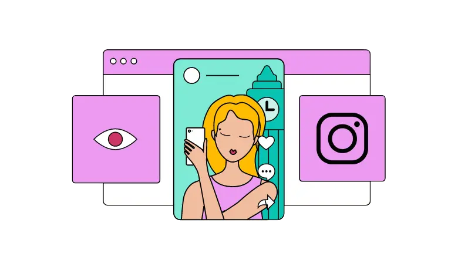

Ver Stories no Instagram sem que a outra pessoa saiba é algo que muitos usuários gostariam de fazer, mas não encontram solução para dar essa espiada. Mas, para alegria destas pessoas, existem alguns métodos para alcançar esse objetivo. Aprenda agora!

1. Acesse o Anonigram
2. Digite o nome do usuário que você quer ver stories anonimamente
3. Veja os stories do Instagram de maneira anônima
Como ver anonimamente stories de uma conta privada
1. Pesquise o perfil privado do Instagram
2. Aguarde carregar os Stories do perfil privado no Instagram
3. Ative o Modo Avião no seu celular
4. Veja os stories do perfil privado de forma anônima no Instagram